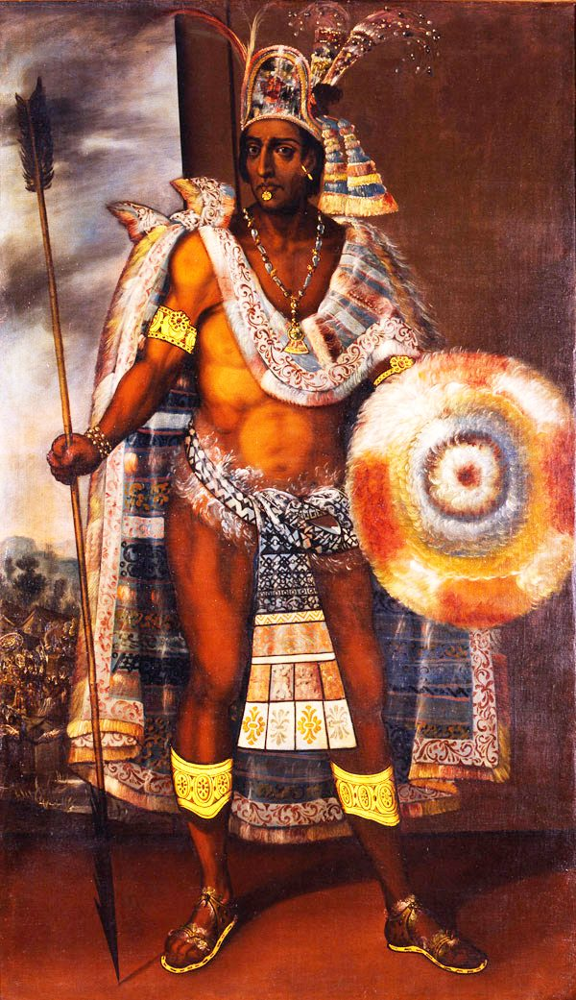

아스텍 제국이 가장 넓고 화려하던 시기의 황제예요. 그의 테노치티틀란은 인구 약 20만의 호수 위 계획도시로, 당시 유럽의 어떤 도시보다 컸어요. 정교한 달력과 수경 농업, 거대한 시장 — '미개'와는 정반대의 문명을 다스렸죠.
1519년 낯선 침입자들 앞에서 그는 무력 대신 선물과 외교로 시간을 벌려 했어요. 신중한 정보 수집이었는지 치명적 주저였는지, 역사가들의 평가는 갈려요. 분명한 건 그가 곧 스페인군의 인질이 되어 제국의 권위가 흔들리는 것을 지켜봐야 했다는 거예요.
1520년 혼란 속에 목숨을 잃었어요 — 성난 군중의 돌에 맞았다는 스페인 측 기록과, 스페인군이 살해했다는 원주민 측 기록이 엇갈리죠. 죽음의 진실조차 기록 싸움이 된 것 — 패배한 쪽의 역사가 어떻게 쓰이는지 보여 주는 인물이에요.